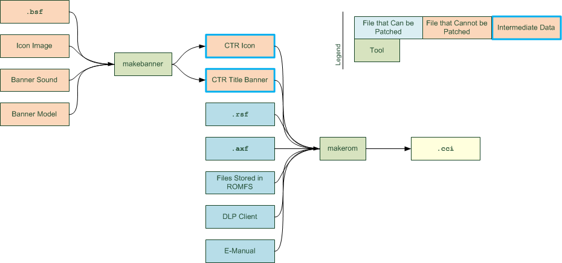
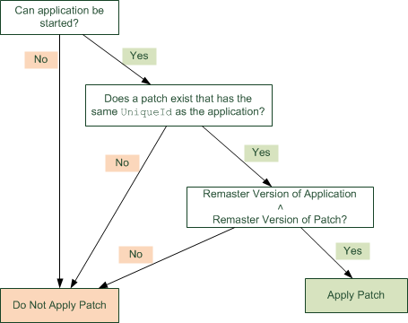
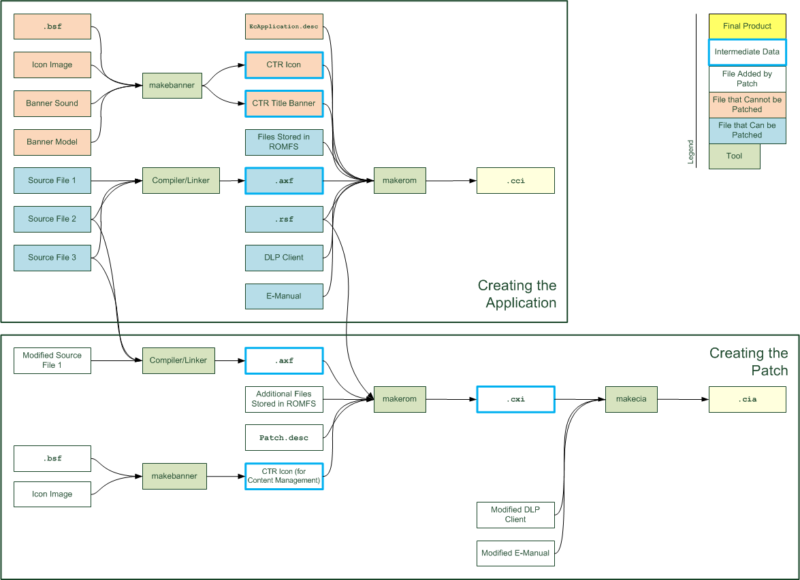

The term "patch" refers both to the mechanism for replacing a number of elements in a card application, and to the data used in this replacement process.
Patches can be downloaded from the Internet from the eShop server. By distributing a patch over the Internet, you can replace a number of elements in a card application after it has gone on sale.
If an unapplied patch exists on the eShop server, it can be downloaded and installed when the application starts from the HOME Menu.
This document presents information about the patch mechanism provided by the CTR-SDK, including the following topics.
This document assumes basic knowledge of CTR-SDK terminology. For a glossary of basic CTR-SDK terms, see CTR-SDK Terminology.
This document uses colored boxes like the one shown below to indicate examples of source code and content like OMakefile.
nn::ro::Initialize(pCrs, crsSize);
This section defines terminology that relates to the patch mechanism provided by the CTR-SDK.
The meanings and usage of terms in this document and the CTR-SDK may differ from their general meanings and usage.
The following is a general description of the specification for patches.
The patch mechanism for the Nintendo 3DS system can update the following elements of an application.
Note: The feature for adding new Download Play client devices from a patch is supported in System Updater 0.20.51 and later versions. Prior to that release, unless the title the patch was being applied to included a Download Play client, it could not be updated.
On the other hand, the following items cannot be updated.
In the following graphic that shows the flow when creating a CCI file, the files that can and cannot be updated are shown in different colors. 
Only one patch can exist at any one time for a particular application.
When revised versions of an application are released, the latest patch must support all versions of the application.
Patches are managed as a type of add-on content from the Add-On Content Management screen in the System Settings. Users can delete patches using this screen.
Patches must include icons for display on the Add-On Content Management screen.
We recommend showing the version in the patch icon so that users can verify that the patch has been correctly applied. We further recommend using the template included with this package to apply the version to the icon.
This patch icon template is located in CTR_SDK/documents/TechnicalNotes/Patch/resources.
If the card-based application can be purchased through download, the patch is applied to the downloadable version just like to the card-based version.
You can think of a Nintendo 3DS system patch as a special kind of downloadable application.
In fact, the final ROM image of a patch is created in nearly the same format as a downloadable application. A patch differs from a normal downloadable application in the following ways.
nn::fs::MountRom mounts the ROM-FS of the corresponding card application and not the patch's own ROM-FS.
nn::fs::MountExtraRom.
In other ways, a patch is the same as a downloadable application. In particular, they share these points in common.
Patches can be applied with no support in advance for the patch mechanism. The application to which the patch is being applied does not need to support the patch mechanism itself in advance.
However, the application to which the patch is being applied must support some functions that the patch uses.
Note that because the entire static module of the application is being replaced, these items also hold true for the code in the patch.
You can download patches when starting an application from the HOME Menu, or from Nintendo eShop.
Previously, a feature to download patches in the application was provided, but new implementations are prohibited in principle because of the high costs of implementation and verification. The feature to jump to the Patch Page in Nintendo eShop can be used as a method to promote applying patches from inside the application.
A time lag occurs from when the patch is actually distributed until the patch can be downloaded from the HOME Menu. To encourage users to perform patch updates immediately after a patch distribution, consider the following "Patch Enforcement."
The patch mechanism does not guarantee that the latest patch has been applied.
If you want to make sure that an application that uses the network is running with the newest applied patch, you must implement your own method of checking the patch version, using the authentication server or the game server or some other means.
If you are enforcing the application of patches using the authentication server, set the remaster version of the patch you want to enforce in the authentication server. When an application with an earlier remastered version is started, the authentication server returns error 002-0120 when the application executes the following functions.
If you are using the account server, set the remaster version of the patch you want to enforce in the account server. When an application with an earlier remastered version is started, the account server returns error 022-2512 when the application executes the following functions.
nn::act::applet::AcquireIndependentServiceToken functionFor patch enforcement in most cases, you must implement it from the first release of the application.
The patch is saved to an SD card, but the backup device is mounted in a CTR Card. For this reason, when an application is run on different systems, situations can easily arise where save data created on one system to which the patch has been applied must be loaded in the pre-patched state for running on a system to which the patch has not yet been applied.
The application must be able to operate correctly under these circumstances. In other words, there must be compatibility for reading and writing save data no matter what version of the patch has been applied, and even if no patch has been applied.
Design your application appropriately from the first release, or do not make any changes what would cause compatibility to be lost. Do not make changes to the value of SaveDataSize within the RSF file either before or after the patch.
In the same way, you must take care to retain compatibility for expanded save data, and for StreetPass and SpotPass data format.
This section describes the process flow involved in applying a patch to an application.
The patch must first be imported to an SD card before it can be applied to the application.
In a production environment, you can implement downloads when an application is started from the HOME Menu or from Nintendo eShop.
In the development environment, you can also use DevMenu to import the patch.
There are a number of conditions that must be met to apply the patch.
First, the application must be able to run.
This condition might seem obvious, but the e-manual can be viewed without starting its application, so it is relevant to patches for e-manuals. The retail version of an application can run, obviously, so this condition is relevant mainly when debugging.
Second, the patch must have the same UniqueId as the application it is patching.
The UniqueId serves as the means of associating applications and patches. When the application starts, the system searches for a patch with the same UniqueId as the application, and if it finds one, it applies that patch to the application.
As another condition for applying the patch, the system checks the remaster versions.
The remaster versions of the application and the patch are compared, and the patch is applied only if the remaster version of the patch is higher than the version for the application. If the remaster version of the patch is lower than the version for the application, the patch is not applied.
For more information about patch and application remaster versions, see Version Management.

Even if these conditions are satisfied, the patch is not applied if the SD card is write-protected.
If the conditions are met to apply the patch, the system handles the patch as follows.
When the patch is applied, the entire static module of the application is replaced by the static module of the patch. However, no changes are applied to the ROMFS.
The static module of the patch is used, and the original static module is no longer referenced in any way. In fact, it can no longer be referenced. For this reason, the static module of the patch must have all of the features of the static module of the application, with the exception of features that are being removed.
On the other hand, even when a patch has been applied, the original ROMFS is still mounted and referenced. If you want to add the mounting of the ROMFS of the patch separately, use the nn::fs::MountExtraRom function. The files in the original ROMFS are not replaced automatically when the patch is applied. To reflect the changes that have been made to resource files, you must mount the patch ROMFS in the static module of the patch, and alter the code to load the revised data from the ROMFS of the patch.
As with the static module, when the patch is applied the e-manual and Download Play client patches are used and the originals are no longer referenced in any way. However, unlike the static module, patches for these may not be included. If the patch does not include e-manual and Download Play client patches, the originals continue to be referenced.
Occasionally the patch is not properly applied due to factors such as SD card damage. If this occurs, the patch cannot be downloaded again. You must delete the patch in System Settings from Data Management > 3DS Data Management > Add-on Content Management.
Patches, like applications, have remaster versions.
To use a patch, the patch and the application must share the same remaster version. For each new revised version, the remaster version of the application increments by 1. Additionally, the remaster version increments by one every time there is a patch update.
For example, say that two patches were released after the first release of the application, and then a revised version of the application was released, and after that another patch was released. The value of the remaster version would changes as shown in the following table.
| Remaster Version | ||
|---|---|---|
| Application | Patches | |
| Initial version | 0 | -- |
| First patch | -- | 1 |
| Second patch | -- | 2 |
| Revised version | 3 | -- |
| Third patch | -- | 4 |
The remaster version can go as high as 63. Additional patches beyond that limit cannot be created.
The patch is applied only if the remaster version of the downloaded patch is higher than the remaster version of the application that was attempting to start. In the example in the previous section, the application starts without applying the patch if the combination is the "revised version" of the application and the "second patch." If the "third patch" is downloaded, the combination changes and the patch is applied even if the application is the "revised version."
In the example, operations must be normal for the following combinations.
You must verify normal operations in combination with all of the versions of the application that have been released to date.
Patches released prior to the revised version of the application are not applied to the revised version, so you do not need to test combinations of patches and revised versions.
To update a Download Play client, you must also update the Download Play client remaster version. The Download Play client remaster version is incremented by one each time the Download Play client is changed.
If the patch is for an application that involves two or more Download Play clients and not all clients are being updated, only update the remaster version for the Download Play clients that are being updated. The patch must also include the Download Play clients that are not being updated, but do not update the remaster version for these systems.
If no updates are being applied to Download Play clients, do not include any Download Play clients in the patch. In this case, the original Download Play clients are used.
This section describes methods and cautions about the development of the content included in patches.
When the patch is applied, the entire static module of the application is replaced by the static module of the patch. For this reason, the task of creating code for a patch is almost identical to creating code for a revised version.
One part that differs is the code for reading files from ROMFS. In the revised version of the application, simply replace the files in ROMFS. For the patch, you must change the code to use nn::fs::MountExtraRom to mount the patch ROMFS and read the updated resource files from the patch ROMFS.
If the export type of the static module is set to offset, the offset of the static module can change. You must rebuild the entire dynamic module and replace it for the original one.
The following patch-related API functions have been added.
nn::fs::MountExtraRomnn::fs::GetExtraRomRequiredMemorySizenn::fs::CreateArchiveAliasnn::applet::CTR::JumpToEShopPatchPageUse of these functions is not required.
The e-manual is replaced in its entirety. You must create a complete Manual.bcma with nothing missing.
Overall, the process is the same as for a revised version.
Rather than updating individual Download Play clients, they are all replaced together in a batch. For an application that involves two or more Download Play clients, even if the patch is meant to update only one Download Play client, it must include not only that client but also all of the other Download Play clients that are not being updated.
However, if the update of the static module makes a Download Play client unnecessary, that Download Play client does not need to be included in the patch. You can also add Download Play clients if necessary.
As with the e-manual, the overall process is the same as when creating a revised version.
When updating titles that use the DLP fake client, in order to maintain compatibility, we must consider instances where fake clients differ from the remastered version connect to the DLP server. You must verify normal operations in combination with all of the versions of the application that have been released to date.
When versions are incompatible, proceed as follows.
childIndex, and specify that childIndex with the nn::dlp::FakeClient::StartScan function.
childIndex will not be used after the update, you do not have to include it in the patch.
This section describes how to make the ROM image of the patch.
The final ROM image of the patch is in the format of a CIA file, just like that of a downloadable application. The procedure for creating this file is basically the same as for a downloadable application.
The figure shows the overall process, together with the flow when creating the application. 
Patches are listed as a type of downloadable content on the Data Management screen in System Settings.
The displayed information uses the title name and icon data specified in the BSF file. Be sure to configure and verify this data.
We recommend including the patch version in the 48x48 icon image or the title name so that patches can be easily distinguished from add-on content in the Data Management screen.
If the version is displayed on either the large and small icons but not both, ensure that you do not conflict with the rules set forth in the section on CTR icons in the CTR Guidelines.
In current systems, parameters specified in the BSF file other than the icon image and title name cannot be updated by the patch.
As a result, any changes to these other values are not applied on the system. However, there is no guarantee that this specification will not change in the future. Set the values the same as they are in the application to which you will apply the patch.
The first step is to create a CXI file containing the static module and the ROMFS. Create a regular CXI file, incorporating the following components.
desc file for the patch.
To create a patch CXI file you must use a DESC file meant for patches. Use $CTRSDK_ROOT/resources/specfiles/Patch.desc.
When creating patches in the extended application format, use the ExtPatch.desc file instead of Patch.desc.
As the RSF file for the patch, you specify the same RSF file as for the application, but you must re-specify appropriate values for some items as described below.
BasicInfo: ProductCode: "CTR-U-CTAP" # Product code. TitleInfo: Category: Patch # Category. SystemControlInfo: RemasterVersion: 1 # Remaster version.
You cannot change the banner of the application that the patch is applied to even if you set a banner file in the ROM image of the patch.
If you set a banner file in the ROM image for the patch, that created ROM file will be larger by the data size of that banner.
To reduce the size of the patch, use the -banner option when you run makerom and do not set a banner.
If the patch is updating the e-manual or the Download Play clients, also create CFA files for them. Create these files in the same way as a regular CFA file.
Now create a CIA file using these created CXI and CFA files. If the e-manual and the Download Play clients are not being updated, do not include their CFA files.
If you are using the CTR-SDK build system, you can create the patch by partially altering the application's OMakefile, as follows.
CTR_APPTYPE = PATCH DESCRIPTOR = $(CTRSDK_ROOT)/resources/specfiles/Patch.desc
If necessary, make the appropriate revisions to SOURCES and MANUAL_DIR.
To apply a patch and run the application, use DevMenu on the development hardware to import the patch to an SD card from the patch CIA file, and then start the application to which the patch is being applied.
This starts the application with the patch applied.
To debug the application with the patch correctly applied, after you apply the patch, load the CCI file of that application to the debugger.
To debug the source, you must place the AXF file of the patch in the same directory as this CCI file of that application. The patch AXF file has the same name as this CCI file, but with the .afx extension. Alternatively, load the debug information for the patch AXF file after debugging.
The procedure described in Patch Debugging is not realistic because every time the content of the patch is changed it must be written again to an SD card. For this reason, at the development stage, patches are developed as card applications. In short, the patch is developed as a revised version of the application, after which the patch is cut out.
To create the same patch from the revised version of the application, you must complete the following tasks.
In step 2, when you create the revised version, you can minimize the amount of changes required when creating the patch by using the nn::fs::CreateArchiveAlias function so that you access a different archive.
Specifically, the process goes like this:
When creating the revised version:
CreateArchiveAlias to mount a ROMFS alias with a name like rom2:.
rom2: archive is used to load the changed resource.
When creating the patch:
CreateArchiveAlias, use MountExtraRom to mount the rom2: archive.
UniqueId
The target of the patch is identified by the UniqueId. If you create and import a patch with the CTR-SDK default UniqueId (0xff3ff), the patch is applied to the CTR-SDK sample demos and all other applications that use this default UniqueId. In most cases, those applications generate an error when they start.
Be careful about applying patches while your application is still at the stage where it is using the default UniqueId.
Although the application does not need to be running to check the patch for its e-manual, you cannot apply the patch to the e-manual if the application is not in a runnable state.
In particular, if the application requires a backup device, you cannot apply the patch to the e-manual if a backup device connected to a CTR Card is not inserted in the card slot.
cia.out from the system.
SaveDataSize must not be changed before and after a patch.
EcRightTool to EcDevTool. Added a caution for when reverting patches.
cia.out.
CTR-06-0321-011-E
CONFIDENTIAL
{kind=link}
{kind=link}